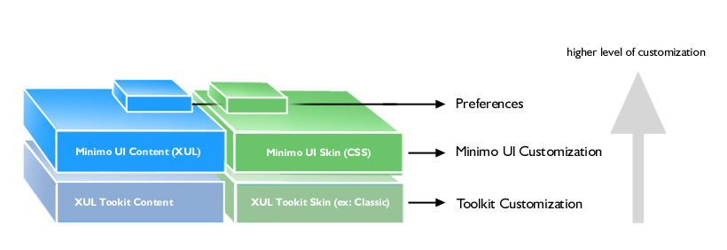
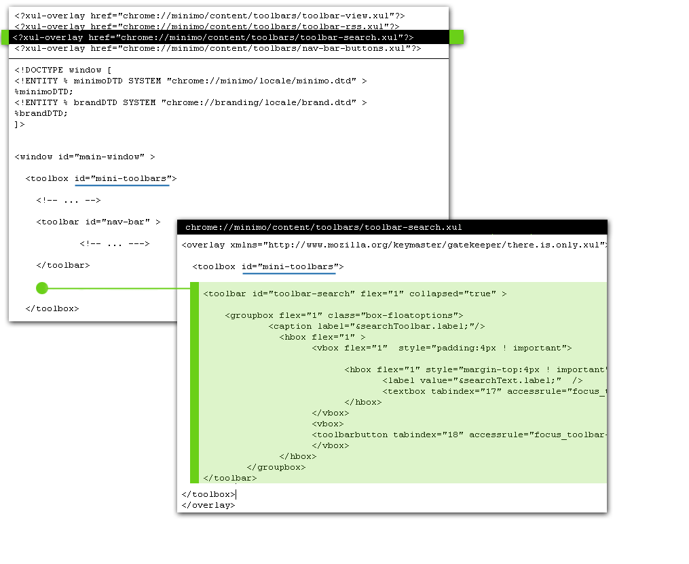
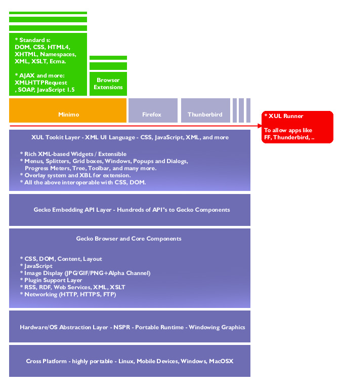

You are here: Minimo project page > Customizing Minimo
Customizing Minimo
Minimo UI Chrome - Overview
Most of the UI layer is provided in minimo.jar () which uses pre-defined XUL elements provided by the XUL Toolkit Layer. There are many levels of customization ranging from visual style to layout functionality. The following index organizes the type of customization with the type of resource and how to information.

- Minimo Preferences
- Default Font Setting.
- Default Home Page URL.
- Default Font Setting for Minimo's UI.
- Special Hardware Keys Shortcuts.
- More in Preferences..
- Customizing Skin
- General Colors.
- Main Toolbar icons.
- Context Menus.
- Customizing UI Elements
- Main Toolbar.
- Additional Toolbars.
- Adding Preferences.
- Context Menus.
- Customizing the Toolkit (XUL Elements)
- New style to Scrollbar.
- Styling other items.
- Additional Processes
Customization FAQ
UI Skin Look and Feel
- How do I change the look of the scroll bars?
- How do I set the color scheme?
- How do I embed logos?
UI Structural
- How do I add custom buttons to the toolbar?
- How do I change the position of menu bars, scroll bars?
Behavioral and Extensions
- How do I change how a menu bar behaves i.e. drop downs, tabs, etc
- How do I control how a button behaves?
- Can I lock down the look of certain elements, or will the user have the ability to change everything via a global CSS?
- Can I assign shortcuts for frequent tasks?
Customizing Preferences
In Minimo, part of the UI experience and functionality is associated
to preference attributes. These values can be modified via the
all.js preference file. Some of the
preference items are exposed to end-users.
Default Font Setting
pref("browser.display.zoomui", 10); // This pref may be modified from Minimo.
pref("browser.display.zoomcontent", 10);
// This pref may be modified from Minimo.
Default Home Page
pref("browser.startup.homepage", "http://www.google.com/xhtml");
Other preferences
pref("ssr.enabled", true);
// Small Screen Settings - enables CSS for small screen.
pref("ssr.site.enabled", true);
pref("config.wince.overrideHWKeys", false);
pref("skey.enabled", true);
Customizing Skin
The skin can be customized using CSS rules. The following rules are associated with XUL elements in Minimo.
Main Toolbar, URL bar input field and its image background.
#urlbar input {
background-position: 0px 100%;
background-repeat: no-repeat;
background-image: url("chrome://minimo/skin/transfer.jpg");
padding: 0px;
margin: 0px;
border: 1px solid black;
}
Main Toolbar: Security Icon States
#lock-icon.security-na {
}
#lock-icon.security-broken {
margin-left: 2px;
list-style-image: url("chrome://minimo/skin/security-broken.png");
}
#lock-icon.security-notbroken {
margin-left: 2px;
list-style-image: url("chrome://minimo/skin/security-notbroken.png");
}
Main Toolbar Close Button
.tabs-closebutton-box{
list-style-image: url("chrome://minimo/skin/close-11px.png");
}
Main Toolbar Close Button
.button-close {
background: #CCC url("chrome://minimo/skin/close.png") no-repeat 50% 50%;
margin-right: 4px !important;
margin-top: 0px !important;
border: 1px outset #bbbbbb;
}
Main Toolbar : Navigation Buttons
#menu-button {
background: url("chrome://minimo/skin/m.png") no-repeat 50% 50%;
width: 20px !important;
height: 12px !important;
}
#back-button
{
list-style-image: url("chrome://minimo/skin/back.gif");
margin-left: 2px;
}
#forward-button
{
list-style-image: url("chrome://minimo/skin/forward.gif");
}
#stop-button
{
list-style-image: url("chrome://minimo/skin/stop.gif");
}
.menu-button
{
background: url("chrome://minimo/skin/m.png") no-repeat 50% 50%;
width: 20px !important;
height: 12px !important;
}
.back-button
{
list-style-image: url("chrome://minimo/skin/back.gif");
margin-left: 2px;
}
.forward-button
{
list-style-image: url("chrome://minimo/skin/forward.gif");
}
.stop-button
{
list-style-image: url("chrome://minimo/skin/stop.gif");
}
.reload-button
{
list-style-image: url("chrome://minimo/skin/reload.gif");
}
}
UI Zoom Toolbar Icons
#uizoomplusitem {
list-style-image: url("chrome://minimo/skin/up.png");
}
#uizoomminusitem {
list-style-image: url("chrome://minimo/skin/down.png");
}
#zoomplusitem {
list-style-image: url("chrome://minimo/skin/up.png");
}
#zoomminusitem {
list-style-image: url("chrome://minimo/skin/down.png");
}
Customizing UI Elements
General Overview - UI chrome
.
General XUL extensions in Minimo
UI elements can be customized via overlays ( XUL Overlays ) or directly editing the XUL files in minimo.jar. In future releases, Minimo Chrome should support an extension mechanism which aims to add more control to customization. Currently there is no registration mechanism, so additions to the XUL files are considered part of the Minimo Chrome core functionality. When editing XUL files directly, it's important to keep some of the controls. The following section (Main Navigation Toolbar) shows that tabindex attributes should be preserved. In further sections, you will see that each toolbar needs some additional accessibility tags defined.
Main Navigation Toolbar ( minimo.jar/content/minimo.xul )
It's possible to add new toolbar buttons or other elements in the toolbar. However it's important to preserve the accessibility attributes such as accessrule and the tabindex values.
// Minimo.xul - main toolbar navigation bar.
<toolbar id="nav-bar" >
<toolbarbutton tabindex="1" accessrule="focus_nav-bar"
id="menu-button" accesskey="m" command="cmd_BrowserMenu" />
<toolbarbutton tabindex="2" accessrule="focus_nav-bar"
id="back-button" command="cmd_BrowserBack" />
<toolbarbutton tabindex="3" accessrule="focus_nav-bar"
id="forward-button" command="cmd_BrowserForward" />
<toolbarbutton tabindex="4" accessrule="focus_nav-bar"
id="reload-stop-button" class="reload-button" command="cmd_BrowserReload"/>
<textbox tabindex="5"
id="urlbar"
flex="100%"
type="autocomplete"
enablehistory="true"
autocompletesearch="history"
completeselectedindex="true"
autocompletepopup="PopupAutoComplete"
onfocus="URLBarFocusHandler();"
ontextentered="return URLBarEntered();">
<hbox><image id="lock-icon"
class="security-na" /></hbox>
</textbox>
</toolbar>
Adding Toolbars via XUL Overlays
Browser Toolbars are organized in ~minimo.jar!/content/toolbars. This section shows a case example, the Search Toolbar, that is included in Minimo. The same overlay mechanism can be used to provide an additional toolbar. The following link shows the source-code for the Search toolbar.
~minimo.jar/content/toolbars/toolbar-search.xul
The Search Toolbar is defined via XUL Overlays. minimo.xul main UI has instructions to load this overlay:

When a new toolbar element is added (in the XUL itself or via overlay) it's important to maintain Minimo's accessibility function. The following section shows the focusnavigation element located in minimo.xul:
<focusnavigation> <focushandler id="focus_tabcontent" target="content" accessfocus="#tabContent" /> <focushandler id="focus_nav-bar" target="nav-bar" accessfocus="menu-button" accessnextrule="focus_toolbar-view" accessprevrule="focus_tabcontent" /> <focushandler id="focus_toolbar-view" target="toolbar-view" accessfocus="zoomplusitem" accessnextrule="focus_toolbar-rss" accessprevrule="focus_nav-bar" /> <focushandler id="focus_toolbar-rss" target="toolbar-rss" accessfocus="rss-close" accessnextrule="focus_toolbar-search" accessprevrule="focus_toolbar-view" /> <focushandler id="focus_toolbar-search" target="toolbar-search" accessfocus="search-close" accessnextrule="focus_content" accessprevrule="focus_toolbar-rss" /> <focushandler id="focus_content" target="content" accessfocus="#tabContainer" accessnextrule="focus_tabcontent" accessprevrule="focus_toolbar-search" /> </focusnavigation>
Each accessible element in ~minimo.jar/content/toolbars/toolbar-search.xul has a accessrule attribute attached to it:
// Example from ~minimo.jar!/content/toolbars/toolbar-search.xul <textbox tabindex="17" accessrule="focus_toolbar-search" id="toolbar-search-tag" flex="1" onchange="return DoBrowserSearch();"/>
Each focushandler element tells which is the next toolbar and the previous toolbar. This element supports Minimo's keyboard navigation.
Adding Preference Panels
Each new preference panel can be implemented using the same overlay pattern described previously. The main preferences navigation panel ( ~minimo.jar!/content/preferences/preferences.xul ) is launched as a dialog window, which includes overlay definition to each inner panel.
<?xul-overlay href="chrome://minimo/content/preferences/pane-general.xul"?> <?xul-overlay href="chrome://minimo/content/preferences/pane-advanced.xul"?> <?xul-overlay href="chrome://minimo/content/preferences/pane-privacy.xul"?> <?xul-overlay href="chrome://minimo/content/preferences/pane-connection.xul"?>
The next step is the panel implementation. Check out pane-general.xul example. The following code snippet shows an inner panel that is part of pane-general.
<groupbox class='box-prefgroupitem' id='home-box'>
<caption label="Home Page"/>
<box class="box-prefpadding">
<textbox id="browserStartupHomepage" keyup="" tabindex="10"
style="margin:3px ! important;" flex="1" onfocus="prefFocus('home-box')"
onblur="prefBlur('home-box')"
onchange="syncPref(this)" preference="browser.startup.homepage"
preftype="string"/>
</box>
</groupbox>
Important requisites:
- For each preference item element, add a preference
attribute to it, with the preference name that maches the definition in
all.js - Add an ID to this same element.
- In preferences/preferences.xul, register this ID-element, under the preferenceset section.
<preferenceset id="prefsInstance" > <preferenceitem name="browserStartupHomepage" /> <preferenceitem name="enableImages" /> <preferenceitem name="ssr"/> <!-- ... --> </preferenceset>
Customizing Style in the Toolkit
Work-in-progress note: this whole section should be a link to existing documentation and leverage XUL tookit documentation. One examle should be provided to address the [How to Customize Scrollbars] question.
classic.jar
This resource represents the default theme for basic XUL elements defined by the XUL Toolkit. Defined the classic look for basic elements such as buttons, scrollbars, and more.
- Look and feel for scrollbar buttons.
toolkit.jar
XUL Layer Toolkit. Contains actual implementation for the XUL elements such as Tabbed Browser. Usually customization happens in one of the above levels.
Appendix 1 - Running Minimo Chrome in the Desktop
Minimo UI Chrome runs on top of a XUL Tookit Layer which is provided as part of Minimo's core functionality. The following picture illustrates the Mozilla Architecture and where Minimo Chrome fits. Because of this architecture it's possible to test and run the Minimo Chrome in the Desktop. Most of the UI definitions and customization settings can be tested on top of Firefox or XULRunner. To test Minimo in its full functionality, it's recommended to use a device emulator or simply to run in the device.

Environment and Minimo settings
Install XULRunner
- Download a pre-built binary. Unix/Linux builds are available from xulfr.org.
- You may also consider using a recent Firefox browser.
Minimo app Folder for XULRunner
Minimo Chrome can be served from a directory instead using a .jar file. This should speed the up development time when customizing the user-inteface (XML and CSS content). XULRunner uses a file named application.ini to launch the application. Create a directory that represents Minimo, with the application.ini file in it and the following sub-directory structure:
~xulrunner/minimo/ ~xulrunner/minimo/chrome/ ~xulrunner/minimo/defaults/ ~xulrunner/minimo/application.ini
Under chrome directory unzip minimo.jar's contents:
~xulrunner/minimo/chrome/content ~xulrunner/minimo/chrome/locale ~xulrunner/minimo/chrome/skin
And create ~xulrunner/minimo/chrome/chrome.manifest:
content minimo content/minimo/ locale minimo en-US locale/en-US/minimo/ skin minimo classic/1.0 skin/classic/minimo/
Create ~xulrunner/minimo/defaults/preferences/minimo-prefs.js:
pref("toolkit.defaultChromeURI", "chrome://minimo/content/minimo.xul");
pref("general.useragent.extra.mybrowser", "Minimo/010");
And add the following minimo-specific preferences to it. This helps to improve compatibility with the device environment and allows the user to access more user interface flows. For example, when the Preference panel is displayed, it should load and save preferences and display the right values in the UI. Some of the actual device-specific behavior won't work. The file should look like the following:
// XUL runner-specific prefs
pref("toolkit.defaultChromeURI", "chrome://minimo/content/minimo.xul");
pref("general.useragent.extra.mybrowser", "Minimo/010");
// Minimo specific prefs being used by the Preferences XUL
pref("ssr.enabled", true);
pref("ssr.site.enabled", true);
pref("skey.enabled", true);
pref("browser.startup.homepage", "http://www.google.com/xhtml");
pref("browser.display.zoomui",10);
pref("browser.display.zoomcontent",10);
pref("snav.enabled", false);
pref("browser.formfill.enable", true);
It can be executed calling xulrunner and passing pathto/application.ini as parameter:
~\xulrunner\xulrunner.exe "minimo\application.ini"
Appendix 2 - Packaging minimo.jar
Minimo.jar is comprised of XUL, CSS, JavaScript, and other resources such
as XML and images. In order to run in Minimo, this chrome folder has
to be packaged using JAR format.
Other customization processes
It's also possible to dynamically customize settings and generate the package on-the-fly with a separated processes. As an example, server-side script could be used to dynamically update XML and package the directory structure as minimo.jar. Because XUL and Scripts can be executed in run-time, it's also possible to add synchronization mechanisms and offer remote customization or settings.
Customizing Framework Feedback
This document is work-in-progress. Please contact mgalli % mgalli.com with questions and feedback.
Getting Involved
Minimo is based on the same code that FireFox, Thunderbird, and the Mozilla Suite uses. The first place to start is understanding how to develop for this code base. There is a nice Getting Started page.
If you want to look at the Minimo application details, the code lives here:
Feedback and support is always desired. If you have any, please contact us.
Minimo.jar's general structure
-
content
-
minimo
- bindings
- preferences.css
- preferences.xml
- preferences
- pane-general.xul
- pane-advanced.xul
- pane-privacy.xul
- pane-connection.xul
- pane-okaycancel.xul
- preferences.js
- preferences.xul
- toolbars
- toolbar-general.xul
- toolbar-view.xul
- toolbar-rss.xul
- toolbar-search.xul
- rssview
- minimo.js
- minimo.xul
- bindings
-
minimo
- locale
-
skin
-
classic
-
minimo
- minimo.css
- preferences.css
- back.gif
- forward.gif
- reload.gif
- stop.gif
- m.png
- rssfavicon.png
- transfer.jpg
- up.png
- down.png
- close.png
- security-broken.png
- security-na.png
- security-notbroken.png
-
preferences
- options.png
-
minimo
-
classic